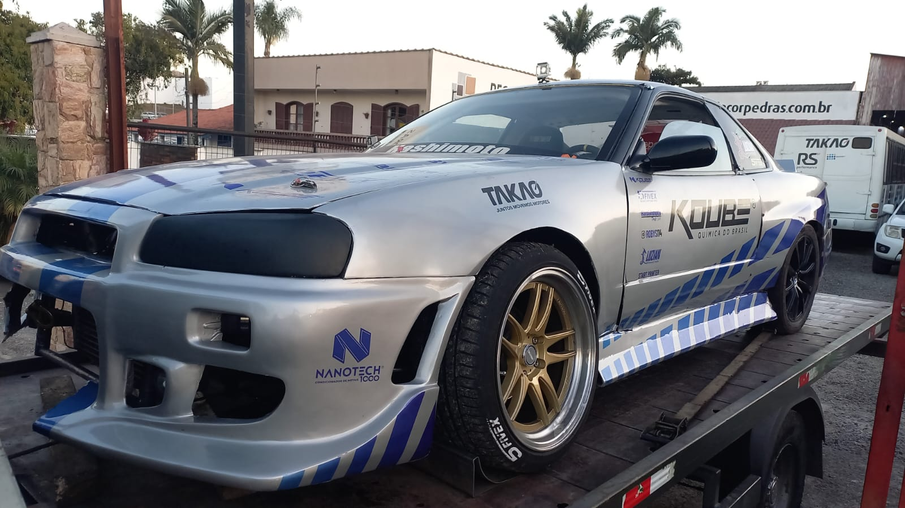
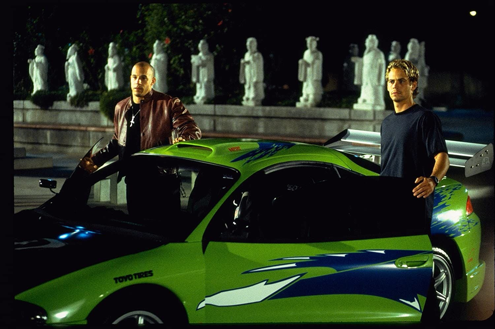

Imagem do suspeito obtido atráves das rede sociais
As autoridades intensificaram nas últimas horas a busca por um indivíduo considerado altamente perigoso e habilidoso ao volante, cuja identidade não foi oficialmente confirmada, mas que já vem sendo apelidado pela imprensa como “O Fantasma das Ruas”. Segundo informações da polícia, o suspeito possui um histórico extenso de participação em corridas ilegais, roubos de cargas de alto valor e fugas cinematográficas que desafiam qualquer padrão convencional de perseguição. Testemunhas afirmam que ele dirige com precisão quase impossível, executando manobras em alta velocidade mesmo em áreas urbanas.
Ultimos Avistamentos

Segundo informações o suspeito teria personalizado a pintura do seu carro para despistar os policiais
O último registro confirmado ocorreu durante a madrugada, quando uma equipe policial tentou interceptar um comboio suspeito na rodovia. Ao perceber a aproximação das viaturas, o fugitivo assumiu o controle da situação e iniciou uma fuga em altíssima velocidade, utilizando atalhos urbanos, túneis e até áreas industriais para despistar os agentes. Relatórios indicam que ele utilizou um veículo altamente modificado, com potência acima do padrão e possível uso de tecnologia não convencional, como sistemas de nitro e bloqueadores de sinal.
Durante a perseguição, diversas viaturas tiveram dificuldades em acompanhar o suspeito, que demonstrou conhecimento avançado de rotas alternativas e comportamento estratégico, antecipando movimentos da polícia.
Perfil do Suspeito

Imagens do veículo danificado após intensa perseguição policial
-
Extremamente experiente em direção de alto risco
-
Conhecimento técnico em mecânica automotiva
-
Possível envolvimento com uma rede organizada de corredores clandestinos
-
Alta capacidade de evasão e planejamento
A polícia acredita que ele não atua sozinho e pode contar com apoio logístico de outros envolvidos, incluindo possíveis olheiros e equipes de suporte.
Risco a população
As autoridades alertam que o indivíduo representa risco real à segurança pública, não apenas pelos crimes atribuídos a ele, mas também pelo modo imprudente como conduz suas fugas. Apesar disso, até o momento não há registro de vítimas fatais diretamente ligadas às ações recentes, o que levanta a hipótese de que o suspeito evita confrontos diretos com civis — embora isso não reduza o nível de perigo.
Operação em Andamento
Uma força-tarefa especial foi mobilizada, envolvendo:-
Polícia Rodoviária
-
Unidades táticas urbanas
-
Monitoramento por câmeras e drones
-
Intligência digital para rastreamento de comunicações
As autoridades também estão analisando registros de câmeras de segurança, pedágios e sistemas urbanos para mapear possíveis rotas utilizadas pelo fugitivo.

Últimas imagens do suspeito junto de um possivel comparsa, a policia já trabalha para identificar o segundo suspeito
Apelo à população
A polícia pede que qualquer informação sobre o paradeiro do suspeito seja imediatamente reportada. A recomendação é clara: Não tente abordar ou seguir o indivíduo. Ele é considerado altamente habilidoso e imprevisível, o que pode colocar civis em risco.
Enquanto as buscas continuam, cresce o mistério em torno da figura que parece transformar cada fuga em um espetáculo de velocidade e precisão. Para a polícia, no entanto, não há glamour — apenas a urgência de capturar alguém que, até agora, sempre esteve um passo à frente.